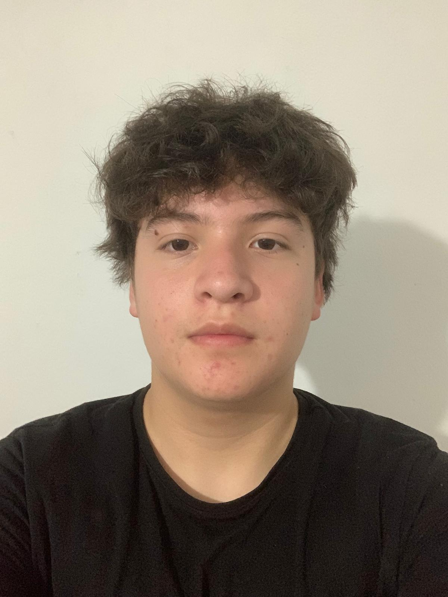
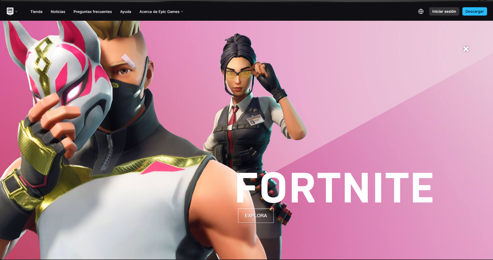

Presentació Personal

Hola! El meu nom és Fernando i soc estudiant del primer any del cicle formatiu d'informàtica. M'apassiona tot el que envolta el món del maquinari, el muntatge d'equips, el gaming competitiu.
Habilitats Informàtiques
Aquestes són les competències tècniques que estic treballant i desenvolupant actualment:
- Disseny i Desenvolupament Web: Estructuració de continguts amb HTML pur, gestió de llistes, enllaços i formularis.
- Sistemes i Maquinari: Muntatge de components d'ordinador, compatibilitat de plaques base i processadors Intel/AMD.
Projectes Futurs i Objectius
Quan acabi aquest curs, els meus objectius principals són:
- Dominar el disseny visual avançat mitjançant fulls d'estil CSS i programar la interactivitat de les pàgines amb JavaScript.
- Aprendre a configurar, administrar i protegir correctament xarxes locals i sistemes operatius tant en entorns Windows com Linux.
- Poder crear i gestionar una plataforma web pròpia
Fase d'Investigació i Prototipatge
Fase 1: Inspiració Professional
M'ha agradat molt perquè té una distribució completament neta, utilitza menús molt senzills per organitzar els seus Projectes

Xarxes Professionals
Pots trobar-me en: